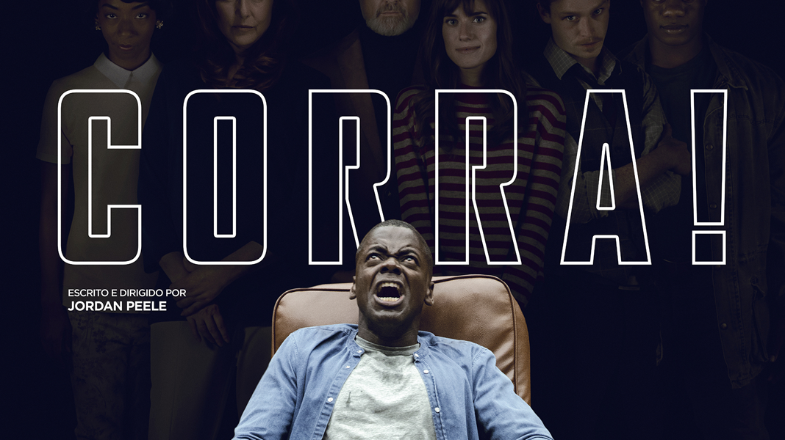

acompanha a deterioração mental de Jack Torrance enquanto ele e sua família enfrentam isolamento e forças sobrenaturais em um hotel remoto. Durante o inverno, Jack Torrance um escritor e ex-professor alcoólatra em recuperação, aceita o emprego de zelador de inverno no isolado Hotel Overlook, localizado nas Montanhas Rochosas do Colorado, levando consigo sua esposa Wendy e seu filho pequeno Danny que possui habilidades psíquicas conhecidas como "iluminação". À medida que o isolamento se prolonga, Jack começa a perder a sanidade, influenciado pelas forças sobrenaturais que habitam o hotel, tornando-se cada vez mais agressivo e colocando sua família em perigo. Enquanto isso, Danny tem visões perturbadoras do passado violento do hotel, incluindo assassinatos e eventos sinistros, e consegue se comunicar telepaticamente com o cozinheiro Dick Hallorann, que também possui a "iluminação"
é um filme que explora os temas de amor, memória e desilusão.A trama segue Joel, interpretado por Jim Carrey, que, após um término traumático com sua ex-namorada Clementine,decide passar por um procedimento médico para apagar suas memórias sobre ela. No entanto, durante o processo, Joel se arrepende e tenta reverter a decisão.
um grupo de sete adolescentes, conhecidos como o "Clube dos Perdedores", se une para enfrentar uma entidade maligna que assume a forma de um palhaço chamado Pennywise.A história se passa na cidade fictícia de Derry, onde crianças começam a desaparecer misteriosamente, e os membros do clube decidem investigar e confrontar o responsável por esses crimes.

é um thriller psicológico que acompanha Chris, um jovem negro, visitando a família de sua namorada branca,onde descobre segredos perturbadores e enfrenta uma trama de racismo e manipulação.O filme,dirigido por Jordan Peele e lançadoem 2017,segue Chris Washington (Daniel Kaluuya), um fotógrafo afro-americano que viaja para conhecer os pais de sua namorada,Rose Armitage (Allison Williams).Inicialmente,Chris percebe o comportamento excessivamente acolhedor da família como uma tentativa desajeitada de lidar com o relacionamento interracial,mas logo percebe que há algo muito mais sinistro por trás da hospitalidade aparente.
